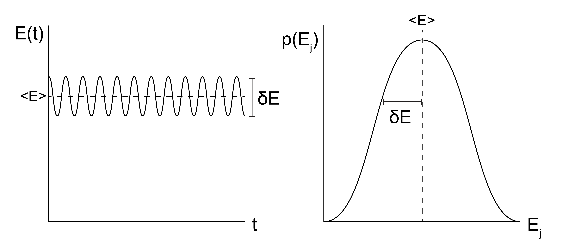
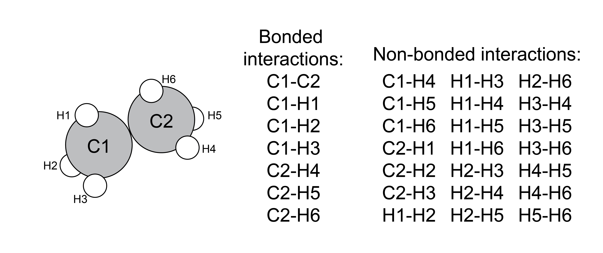

An introduction to molecular simulation#
Additional Readings for the Enthusiast#
Frenkel and Smit [2] Ch. 3.6
Goals for today’s lectures#
Describe Monte Carlo and molecular dynamics simulation techniques
Understand how these two techniques are related to the ergodic hypothesis from earlier lectures
Understand and describe common interaction potentials
Two main simulation methods#
In the previous lecture, we performed a first analysis of a many-body, interacting system; that is, a system in which particle interactions are included in the potential energy function of the system. We also saw that for even a very simple model, the two-dimensional Ising model, analytically calculating system properties becomes immensely complex when interactions are included. For most systems of interest, such as condensed matter systems, analytical solutions are impossible.
How, then, can we leverage the strength of statistical mechanics - that is, relating microscopic features of a system to macroscopic thermodynamic properties via the partition function - if the partition function cannot be analytically obtained? One solution is to simulate the systems of interest to sample system configurations according to the correct underlying probability distribution rooted in the findings from statistical mechanics. These simulations, which we will refer to as molecular simulations to distinguish from alternative simulation methodologies that focus on computing quantum mechanical properties, will be the focus of the next few lectures.
In this class, we will focus on two major types of simulation methods: Monte Carlo simulations, abbreviated as MC simulations, and molecular dynamics simulations, abbreviated as MD simulations. MC and MD simulations aim to calculate the same properties of a system, but the two methods differ in their approach. The two methods can be compared by recalling the ergodic hypothesis, which states that the time-average value of a system property \(Y\) over a sufficiently long timescale \(\tau\) is equivalent to the ensemble-average value of that same property (from [Lecture 2](Lecture 2)):
Which can be visualized like this:

- Monte Carlo simulations#
simulations which use Monte Carlo sampling to determine the probability distribution of configurations, such that we can determine the ensemble-average properties
In MC simulations, we take an approach consistent with the right-hand side of the equation above and attempt to directly sample configurations from the equilibrium ensemble, weighted according to their probability \(p_i\). MC simulations thus relate more directly to the tools of statistical mechanics, specifically because the probability of a particular configuration can be determined based on the corresponding statistical ensemble (i.e., a Boltzmann weight is associated with each state in the canonical ensemble). Sampling from an equilibrium ensemble then requires calculating these probabilities, which in practice requires an expression for the energy of each configuration. Unlike MD simulations, there is no attempt made in conventional MC simulations to explicitly represent time and there is no need to calculate forces, so the underlying potential energy surface can be discontinuous if desired. Similarly, there does not have to be a physical path between states sampled as long as the energy is well-defined for each state. These strengths of MC simulations are also weaknesses, however, as inherently time-dependent properties (such as a diffusion coefficient) cannot be accurately measured.
- molecular dynamics simulations#
molecular simulations which use Newton’s equations of motion to determine the time-evolution of a system of particles, such that we can extract the time-average properties
In MD simulations, we explicitly simulate the time-evolution of particle positions using a modified version of Newton’s equations of motion in which forces are calculated, used to compute particle velocities, and then particle positions are determined by integrating the equation of motion with a discrete, short time interval (i.e. the simulation timestep). This approach effectively treats the computer simulation as an experiment and extracts time-average simulation properties. Hence, the MD approach models the left-hand side of the above equation. The challenge with MD simulations is often ensuring that \(\tau\) is sufficiently long to sample states from the observed system; in other words, ensuring that a system is both in equilibrium and ergodic is a major challenge of MD. From a practical standpoint, the MD equations of motion require the calculation of forces, which requires the potential energy function of the system to be everywhere continuous and differentiable.
We will learn more details about each of these algorithms in the next few lectures. First, however, we will discuss some initial topics regarding how a physical system is actually modeled in a simulation representation.
Model description of a simulation system#
Regardless of whether we sample a simulation observable using a MC or MD method, we first need to understand how to model a physical system. This choice is system specific and depends on many factors, including the length scale over which we expect interesting behavior, the importance of thermal motions, etc. Here, we will summarize various ways to represent a physical system and comment on examples in the literature for which they are commonly used.
Particle-based representations#
The most common simulation model consists of a set of \(N\) particles, where each particle represents either a single atom or some collection of atoms. A single configuration of the system is then specified by by the coordinates \(\textbf{r}^N\) and momenta \(\textbf{p}^N\) of all \(N\) particles. In this notation, \(\textbf{r}^N\) represents a \(3N\)-dimensional vector of all particle coordinates in 3D; the bold font indicates a vector. Particles are typically also associated with chemical properties such as a set of masses, charges, and interaction parameters.
There are three common ways of representing molecules in particle-based simulations. In all-atom simulations, each atom is represented by a particle. In united-atom simulations, all aliphatic carbon atoms and their bonded hydrogen atoms are combined into a single particle, while all remaining atoms are represented as individual particles. In coarse-grained simulations, multiple atoms are combined into a single particle, with the number of atoms corresponding to each particle defined by as the extent of coarse-graining. While clearly representing every atom in a system yields the most detailed information, the trade-off is that including additional particles increases the computational expense of the simulation. Hence, the goal of coarse-graining is to remove explicit descriptions of particles that contribute minimally to the behavior of the system (often solvent molecules, for example) in favor of reducing the computational expense of calculations, which in turn allows for longer simulations (e.g. a longer observation time \(\tau\) in a MD simulation, or more states sampled in a MC simulation). Devising methods to accurately remove atoms from a simulation while retaining the same behavior as at a more detailed length scale is the primary challenge in coarse-graining.

Example systems typically modeled at each level of resolution include:
All-atom - single solutes in solution (e.g. ions in water); small proteins; nanomaterials; small molecules
United-atom - lipids; self-assembled monolayers; surfactants
Coarse-grained - polymers; multicomponent cell membranes; liquid crystals, macromolecular complexes
Consider it like this – each particle adds a level of complexity to computing the simulation, as each particle has its own sets of forces and interactions. In your simulation, you want to use the fewest number of particles that you can and still capture the relevant physics.
Lattice models#
Another means of representing a system is by projecting all coordinates onto a discrete set of lattice points, as opposed to a continuous set of coordinates; we solved lattice models analytically for the Langmuir adsorption isotherm and the Ising model in the Statistical Mechanics unit. A lattice model is an inherently (highly) coarse-grained system, and is typically used for systems for which MD simulations are inappropriate due to the difficulty in sampling a system ergodically. Due to the discretization of lattice positions, lattice models are typically used with MC sampling since forces may be not be easily obtained.
Beyond the MC simulations studied in this class, lattice models are often used with field-based simulation techniques, such as self-consistent field theory, or with techniques in which the system is treated using equations from continuum mechanics (finite element analysis) or fluid dynamics (Lattice Boltzmann methods). These techniques are beyond the scope of this class. Examples of systems in which lattice models may be used with MC simulations include proteins, polymers, and vacancy diffusion.
Interactions between particles#
Having defined various ways of representing a physical system and modeling the positions of particles, we now can define how interactions are defined in a molecular system. Interactions are defined in terms of a potential energy function that is a function of particle coordinates (along with other possible system parameters, such as the presence of an external field).
First, we will consider potentials in typical atomistic or coarse-grained, particle-based simulations, as these potentials are common for both MC and MD simulations of distinct molecules. Interactions can largely be divided into two classes:
- bonded interactions#
interactions meant to represent bonds, bond angles, and torsional angles;
- non-bonded interactions#
interactions between atoms/particles that are not bonded together, and generally reflect common intermolecular forces

Just like scientific definitions of bonds, these categories are not discrete, we just choose to treat these types of interactions differently for simplicity.
In most such systems, non-bonded interactions are assumed to be a
- pairwise interaction#
an interaction that only involves a pairs of particles
as opposed to a
- many-body interaction#
an interaction between a set of 3 or more particles
Which do you think is more computationally complex: pairwise or many-body interactions?
Click for answer
Many-body interactions, by far, as they require iterating over every n-body set to sum up interaction terms (and we know from combinatorics that the number of sets increases factorially when the set size grows). The computational complexity of many-body interactions is the primary reason why most interaction potentials are given as pairwise – you don’t lose too much information by omitting many-body terms, so it can be situationally advantageous to ignore them.
Below, we summarize several typical potentials that would be used primarily in atomistic or coarse-grained MD simulations that fall into each of these categories.
Bonded potentials#
Bonds in real systems emerge from quantum mechanics, and hence any simulation representation that neglects electron degrees of freedom is an approximation to a covalent bond. Most atomic simulations include potentials to restrict bond lengths, bond angles, and dihedral angles, with the typical implementation of these potentials being a harmonic spring. Since the specifics of this approach will vary significantly on a case-by-case basis we will not discuss bonded potentials in more detail other than recognizing their existence.
Non-bonded potentials#
The most common non-bonded interaction in molecular simulations is the
- Lennard-Jones potential#
the 12-6 potential, which is typically written as:
\[ \begin{align}\begin{aligned}\begin{aligned} E_{\textrm{LJ}}(r_{ij}) &= 4\epsilon_{ij} \left [ \left( \frac{\sigma_{ij}}{r_{ij}}\right )^{12} - \left( \frac{\sigma_{ij}}{r_{ij}}\right )^6 \right ] \\\end{aligned}\end{aligned}\end{align} \]
Here, \(r_{ij}\) is the (scalar) distance between particle \(i\) and \(j\), \(\epsilon_{ij}\) is a characteristic interaction energy and \(\sigma_{ij}\) is a characteristic interaction length scale describing the approximate diameter of a particle. The Lennard-Jones potential is broken into an attractive interaction that scales with \(r^{-6}\) and a repulsive potential that scales with \(r^{-12}\).
The attractive potential represents three contributions to typical van der Waals interactions that are all attractive and scale with \(r^{-6}\):
- London dispersion forces#
interactions stemming from the instantaneous dipoles that arise from quantum mechanical considerations
- Debye force#
attractions between dipoles on a molecule and induced dipoles that arise from the polarizibility of a different molecule
- Keesom interactions#
interactions which emerge from the orientation dependence of dipole-dipole interactions
In general, we do not attempt to divide the LJ potential into contributions from these three distinct interactions, but rather empirically identify parameters for \(\epsilon\) and \(\sigma\) which capture all three effects. The repulsive potential represents Pauli exclusion, which acts to ensure that particle wave functions do not overlap. There is no single scaling relation for Pauli exclusion other than that it must be a strong repulsive force, so for computational convenience \(r^{-12}\) is chosen since the calculated \(r^{-6}\) term can be simply squared.
In addition to van der Waals interactions, it is typical to associate charges (or partial charges, to account for the unequal distribution of electrons throughout a molecule that leads to dipoles) to atoms or particles in a system. These charges interact via a
- long-range Coulombic potential#
- \[E_{\textrm{coulomb}}(r_{ij}) = \frac{1}{4\pi \epsilon_0 \epsilon_r}\frac{q_i q_j}{r_{ij}}\]
where \(\epsilon_0\) is the permittivity of free space, \(\epsilon_r\) is the relative dielectric constant (1 in vacuum, 2-4 in oil, 80 in water), and \(q_i\) is the charge on particle \(i\). In practice, Coulombic interactions are difficult to calculate in simulations due to periodic boundary conditions because they decay slowly and the minimum image convention is a severe underestimate of the total magnitude of electrostatic interactions. Instead, advanced techniques, such as Ewald summations, have been derived handle their calculation. Such methods are outside of the scope of this discussion but are discussed in Frenkel and Smit [2] if you would like to review them on your own.
Many other non-bonded interactions are possible and in common use, but these represent the two most common functional forms used in most atomistic simulations.
Interactions in MC simulations#
The interactions described above are all described by potentials that are continuous and differentiable, and thus can be used in molecular dynamics simulations. However, Monte Carlo simulations can use any potential energy function regardless of whether it is differentiable, expanding the repertoire of possible interactions. Some examples of interactions used in MC simulations are noted here.
The first is a
- hard-particle interaction#
interactions where particles are strictly not allowed to overlap (akin to an infinitely strong repulsive potential part of the Lennard-Jones interaction):
\[\begin{split}E_{\textrm{hard}}(r_{ij}) = \left\{ \begin{array}{ccc} \infty &,& r_{ij} < \sigma \\ 0&,& r_{ij} \geq \sigma \end{array} \right\}\end{split}\]
Another example is the interaction between nearest-neighbors used in the Ising model, which can be easily represented in MC simulations:
In principle, many other possible interactions could be defined; here we only included a subset that are commonly found in the simulation literature and map directly to many experimental problems.
Why can we use non-differentiable potentials in MC, but not MD?
Click for answer
Newton’s equations of motion require that the potentials used in MD are differentiable in order to obtain correct forces.
In MC, we use the potential calculate the relative probability of two states, in order to determine whether or not it is probabilistic to move from state 1 to state 2. No differentiation required!